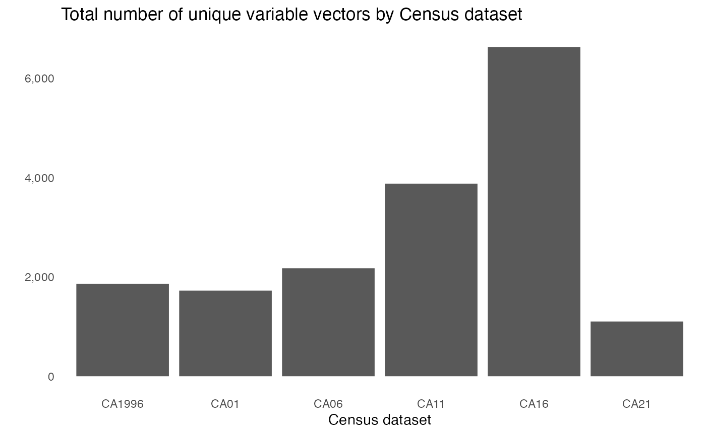

vignettes/data_discovery.Rmd
data_discovery.Rmdcancensus can access Statistics Canada Census data for
the 1996, 2001, 2006 Censuses, the 2011 Census and National Household
Survey, the 2016 Census, as well as the 2021 Census. You can run
list_census_datasets to check what datasets are currently
available for access through the CensusMapper API.
Thanks to contributions by the Canada Mortgage and Housing
Corporation (CMHC), cancensus now includes additional
Census-linked datasets as open-data releases. These include annual
tax-filer data at the census tract level for tax years 2000 through
2017, which includes data on incomes and demographics, as well as
specialized crosstabs for Structural type of dwelling by Document type,
which details occupancy status for residences. These crosstabs are
available for the 2001, 2006, 2011, and 2016 Census years at all levels
starting with census tract.
## # A tibble: 29 × 6
## dataset description geo_d…¹ attri…² refer…³ refer…⁴
## <chr> <chr> <chr> <chr> <chr> <chr>
## 1 CA1996 1996 Canada Census CA1996 StatCa… 92-351… https:…
## 2 CA01 2001 Canada Census CA01 StatCa… 92-378… https:…
## 3 CA06 2006 Canada Census CA06 StatCa… 92-566… https:…
## 4 CA11 2011 Canada Census and NHS CA11 StatCa… 98-301… https:…
## 5 CA16 2016 Canada Census CA16 StatCa… 98-301… https:…
## 6 CA21 2021 Canada Census CA21 StatCa… 98-301… https:…
## 7 CA01xSD 2001 Canada Census xtab - Structural… CA01 StatCa… 92-378… https:…
## 8 CA06xSD 2006 Canada Census xtab - Structural… CA06 StatCa… 92-566… https:…
## 9 CA11xSD 2011 Canada Census xtab - Structural… CA11 StatCa… 98-301… https:…
## 10 CA16xSD 2016 Canada Census xtab - Structural… CA16 StatCa… 98-301… https:…
## # … with 19 more rows, and abbreviated variable names ¹geo_dataset,
## # ²attribution, ³reference, ⁴reference_urlThe list_census_datasets() function also provides
additional background like series reference code, catalogue reference,
and attribution details.

The Census datasets that the cancensus package provides
access to are rich in detail but they can be complex to navigate. There
are thousands of variable vectors, including separate vector indicators
for aggregations split by Total, Female, and
Male populations. As a result, the total number of vectors
per dataset is significant, ranging from 1,715 in the CA01
dataset to 6,623 in the CA16 one.
list_census_vectors('CA21')## # A tibble: 7,709 × 7
## vector type label units paren…¹ aggre…² details
## <chr> <fct> <chr> <fct> <chr> <chr> <chr>
## 1 v_CA21_1 Total Population, 2021 Numb… NA Additi… CA 202…
## 2 v_CA21_2 Total Population, 2016 Numb… NA Additi… CA 202…
## 3 v_CA21_3 Total Population percentage change,… Numb… NA Averag… CA 202…
## 4 v_CA21_4 Total Total private dwellings Numb… NA Additi… CA 202…
## 5 v_CA21_5 Total Private dwellings occupied by… Numb… v_CA21… Additi… CA 202…
## 6 v_CA21_6 Total Population density per square… Ratio NA Averag… CA 202…
## 7 v_CA21_7 Total Land area in square kilometres Numb… NA Additi… CA 202…
## 8 v_CA21_8 Total Total - Age Numb… NA Additi… CA 202…
## 9 v_CA21_9 Male Total - Age Numb… NA Additi… CA 202…
## 10 v_CA21_10 Female Total - Age Numb… NA Additi… CA 202…
## # … with 7,699 more rows, and abbreviated variable names ¹parent_vector,
## # ²aggregationlist_census_vectors(dataset) retrieves an index of all
available vectors for a given dataset from the CensusMapper API or local
cache if recently called. Each Census variable has a vector code
assigned to it with naming pattern that goes
v_{dataset}_{index}. This is the code by which vectors are
identified through the CensusMapper API. In addition the vector code,
there is additional information showing population type, aggregation
type, label and details, as well as variable hierarchy. This function
can also be used to show the variables for additional datasets made
accessible through the CensusMapper API.
Due to the large number of Census variables it can be hard to find
the right data. There is a function for searching through Census
variable metadata in a few different ways. There are three types of
searches possible using this function: exact search, which simply looks
for exact string matches for a given query against the vector dataset;
keyword search, which breaks vector metadata into unigram tokens and
then tries to find the vectors with the greatest number of unique
matches; and, semantic search which works better with search phrases and
has tolerance for inexact searches. Switching between search modes is
done using the query_type argument when calling
find_census_vectors() function.
Note that variable search is optimized for the Census variables in the main Census datasets. While searches generally work for variables in additional datasets such as cross-tabs and taxfiler data, they have not been extensively tested against these datasets.
Exact search uses exact string matching. It is best used when you know exactly the term you are looking for, and is not robust to spelling errors.
find_census_vectors("Oji-cree", dataset = "CA16", type = "total", query_type = "exact")## # A tibble: 4 × 4
## vector type label details
## <chr> <fct> <chr> <chr>
## 1 v_CA16_626 Total Oji-Cree Language; Total - Mother tongue for the total popu…
## 2 v_CA16_1433 Total Oji-Cree Language; Total - Language spoken most often at ho…
## 3 v_CA16_2676 Total Oji-Cree 25% Data; Total - Knowledge of languages for the p…
## 4 v_CA16_5930 Total Oji-Cree 25% Data; Work; Total - Language used most often a…This, on the other hand, will return a warning.
find_census_vectors("Ojib-cree", dataset = "CA16", type = "total", query_type = "exact")## Warning: No exact matches found. Please check spelling and try again or consider using semantic or keyword search.
## See ?find_census_vectors() for more details.
##
## Alternatively, you can launch the Censusmapper web API in a browser by calling explore_census_vectors(dataset)Unless otherwise specified, find_census_vectors() will
use exact search as the default option.
Keyword search is meant to be used when you know the approximate subject matter of the variable without knowing the exact variable you are looking for. Under the hood, keyword search splits the query and vector details into unique unigram tokens and then looks for the vectors with the greatest number of matches.
find_census_vectors('commute mode', dataset = 'CA16', type = 'female', query_type = 'keyword', interactive = FALSE)## # A tibble: 7 × 4
## vector type label details
## <chr> <fct> <chr> <chr>
## 1 v_CA16_5794 Female Total - Main mode of commuting for the employed la… 25% Da…
## 2 v_CA16_5797 Female Car, truck, van - as a driver 25% Da…
## 3 v_CA16_5800 Female Car, truck, van - as a passenger 25% Da…
## 4 v_CA16_5803 Female Public transit 25% Da…
## 5 v_CA16_5806 Female Walked 25% Da…
## 6 v_CA16_5809 Female Bicycle 25% Da…
## 7 v_CA16_5812 Female Other method 25% Da…Keyword search will show all results that have the highest number of
unique keyword matches. What happens if there are other keyword matches
that have fewer total matches? By default, the function argument is set
as interactive = TRUE, which will prompt the user with a
console menu option to see the rest of the matches or not. If using
find_census_vectors() in a script or reproducible
documentation, we recommend setting this argument to
interactive = FALSE.
Semantic search works best with phrases. Rather than the decontextualized unigrams of keyword search, semantic search splits queries and vector details into n-grams and finds matches using approximate string distances based on the generalized Levenshtein distance.
find_census_vectors("after tax incomes", dataset = "CA16", type = "total", query_type = "semantic")## # A tibble: 56 × 4
## vector type label details
## <chr> <fct> <chr> <chr>
## 1 v_CA16_2210 Total Number of after-tax income recipients aged 15 year… Income…
## 2 v_CA16_2213 Total Median after-tax income in 2015 among recipients (… Income…
## 3 v_CA16_2306 Total Percentage with after-tax income Income…
## 4 v_CA16_2297 Total Total - After-tax income groups in 2015 for the po… Income…
## 5 v_CA16_2300 Total Without after-tax income Income…
## 6 v_CA16_2303 Total With after-tax income Income…
## 7 v_CA16_2309 Total Under $10,000 (including loss) Income…
## 8 v_CA16_2312 Total $10,000 to $19,999 Income…
## 9 v_CA16_2315 Total $20,000 to $29,999 Income…
## 10 v_CA16_2318 Total $30,000 to $39,999 Income…
## # … with 46 more rowsSemantic search is more robust to spelling and punctuation issues that may come up with exact search. For example, while this throws a warning:
find_census_vectors("ojib cree", dataset = "CA16", type = "total", query_type = "exact")## Warning: No exact matches found. Please check spelling and try again or consider using semantic or keyword search.
## See ?find_census_vectors() for more details.
##
## Alternatively, you can launch the Censusmapper web API in a browser by calling explore_census_vectors(dataset)This will find the correct Census vector.
find_census_vectors('ojib cree', dataset = 'CA16', type = 'total', query_type = 'semantic')## Multiple possible matches. Results ordered by closeness.## # A tibble: 4 × 4
## vector type label details
## <chr> <fct> <chr> <chr>
## 1 v_CA16_626 Total Oji-Cree Language; Total - Mother tongue for the total popu…
## 2 v_CA16_1433 Total Oji-Cree Language; Total - Language spoken most often at ho…
## 3 v_CA16_2676 Total Oji-Cree 25% Data; Total - Knowledge of languages for the p…
## 4 v_CA16_5930 Total Oji-Cree 25% Data; Work; Total - Language used most often a…Results are ordered by string proximity if there are multiple possible matches.
Statistics Canada uses an official classification of geographic areas
known as the Standard
Geographical Classification (SGC), which is updated periodically.
The latest version is based on the 2021 Census. Geographic
classification codes are standardized across Statistics Canada products,
including the Census as well as any other Statistics Canada dataset. In
practice, this means that the region ID for the Vancouver Census
subdivision is 5915022 across all products. In cancensus
the region ID code is used to identify the appropriate spatial vector
data to retrieve alongside Census data. These region IDs have a
predictable structure, where provinces are two digits, Census divisions
are 4 digits (including 2 for the province), and Census subdivisions
have 7 digits (including 2 for the province, and 2 for the Census
division).
## # A tibble: 3 × 4
## PR CD CSD name
## <dbl> <dbl> <dbl> <chr>
## 1 35 NA NA Ontario
## 2 35 18 NA Durham (Regional municipality
## 3 35 18 13 Oshawa (City)These levels are hierarchical and complete in that a province is split in Census divisions, which are then split into Census subdivisions.
Geographies have standardized names for the province, Census division, and Census subdivision levels, as well as Census metropolitan areas and Census agglomerations. Lower geographic levels such as Census tracts or dissemination areas (DA, EA, and DB) are not named or listed but have unique identifying codes derived from their parent Census subdivision.
## # A tibble: 6 × 2
## level n
## <chr> <int>
## 1 C 1
## 2 CA 9
## 3 CD 293
## 4 CMA 41
## 5 CSD 5161
## 6 PR 13There is also an additional region, with the id 01 and
the level code C which represents all of Canada as a
whole.
Data can also be extracted at the Census Metropolitan Area (CMA) or Census Agglomeration (CA) level, which is derived from a variant of the SGC known as the Statistical Area Classification. Hierarchically, CMAs and CAs represent a collection of constituent Census subdivisions.
A Census metropolitan area consists of adjacent municipalities with a defined core with a total population of at least 100,000 of which 50,000 or more must live in the core based on Census data. Adjacent municipalities must have a high degree of integration with the core, which Statistics Canada measures based on the commuting flows indicated in Census data. Census Agglomeration areas have to have a core population above 10,000.
All CMAs and CAs consist of Census subdivisions but not all Census subdivisions are a subset of a CMA or a CA. For more details on CMAs and CAs, consult Statistics Canada’s Census Dictionary article for Census metropolitan areas (CMA) and census agglomerations (CA). All CMAs and some CAs have data at the Census tract level, but most CAs do not. The 2021 Census has 41 CMAs and 9 CAs with Census tracts that have their own defined geography. There are a further 102 CAs without Census tracts that do not have their own distinctly defined geographies.
Dissemination areas (DA) are the smallest atomic geographic unit at which all census data is captured. DAs cover the entirety of Canada and follow the boundaries of census subdivisions and census tracts. While inter-census geographic stability is not guaranteed, they generally tend to be as stable as the census tracts and census subdivisions that they make up. In addition to census boundaries, DAs will generally follow natural boundaries created by other spatial features like roads, railways, water features, and designed to be spatially compact and with a target population around 400-700 persons. The 2021 census data has 57,936 distinct DAs.
Enumeration areas (EA) were the DA equivalent for censuses prior to 2001. Similar to DAs, EAs were used to as the basic level at which census data was collected. They do not necessarily correspond accurately to DAs in data from 2001 onwards.
Dissemination block (DB) level data is available for the 2001-2021 datasets. DBs are essentially city blocks, bounded by intersecting streets and therefore are largely the product of road networks at the time of the census. The geographies and identification codes of DBs are not necessarily stable over time. DBs are split whenever they intersect with boundaries of higher geographic levels in such a way as to ensure that they can be aggregated upwards precisely. DBs only provide data for population, dwelling counts, and number of households (from 2006 onwards) without any additional characteristic data. DBs with population under 15 have their population counts adjusted for privacy. For the 2021 census, there are close to half a million DB distinct regions.
For any valid Census dataset, you can view all available Census
regions by calling list_census_regions(dataset). This will
retrieve the region code, the name, and the
level code indicating the type of geography. Other
information includes population, municipal status, as well as parent
geographic ids for lower levels. All CMAs are included with their own
defined geography, as well as those CAs which have their own Census
tracts.
list_census_regions('CA21')## # A tibble: 5,518 × 8
## region name level pop munic…¹ CMA_UID CD_UID PR_UID
## <chr> <chr> <chr> <int> <chr> <chr> <chr> <chr>
## 1 01 Canada C 36991981 NA NA NA NA
## 2 35 Ontario PR 14223942 Ont. NA NA NA
## 3 24 Quebec PR 8501833 Que. NA NA NA
## 4 59 British Columbia PR 5000879 B.C. NA NA NA
## 5 48 Alberta PR 4262635 Alta. NA NA NA
## 6 46 Manitoba PR 1342153 Man. NA NA NA
## 7 47 Saskatchewan PR 1132505 Sask. NA NA NA
## 8 12 Nova Scotia PR 969383 N.S. NA NA NA
## 9 13 New Brunswick PR 775610 N.B. NA NA NA
## 10 10 Newfoundland and Labrador PR 510550 N.L. NA NA NA
## # … with 5,508 more rows, and abbreviated variable name ¹municipal_statusWe can also search through all named geographies. This will return any geographies that have a name that matches or partially matches the search query.
search_census_regions("Vancouver","CA21")## # A tibble: 7 × 8
## region name level pop municipal_status CMA_UID CD_UID PR_UID
## <chr> <chr> <chr> <int> <chr> <chr> <chr> <chr>
## 1 59933 Vancouver CMA 2642825 B NA NA 59
## 2 5915 Greater Vancouver CD 2642825 RD NA NA 59
## 3 5915022 Vancouver CSD 662248 CY 59933 5915 59
## 4 5915046 North Vancouver CSD 88168 DM 59933 5915 59
## 5 5915051 North Vancouver CSD 58120 CY 59933 5915 59
## 6 5915055 West Vancouver CSD 44122 DM 59933 5915 59
## 7 5915020 Metro Vancouver A CSD 18612 RDA 59933 5915 59Sometimes it can be easier to find the right vectors or regions by exploring the layout and hierarchy of Census data. This is especially true when we are not sure of what information is available or are not sure where to start. Finding the right Census geographic code on a map will be easier for some than using named search. This is also handy if we want to assemble a custom aggregation of region codes at different hierarchies.
To facilitate this, we have included a couple of convenience
functions that take you directly to an interactive tool with variable
and region details on the Censusmapper website. To explore
the hierarchical variable structure of a given dataset, say the 2006
Census, running explore_census_vectors(dataset = "CA06").
To view Census geography on an interactive map, there is
explore_census_regions(dataset = "CA16"). As usual, vectors
and geographies for different Census datasets can be retrieved by using
the appropriate dataset code for the dataset argument.